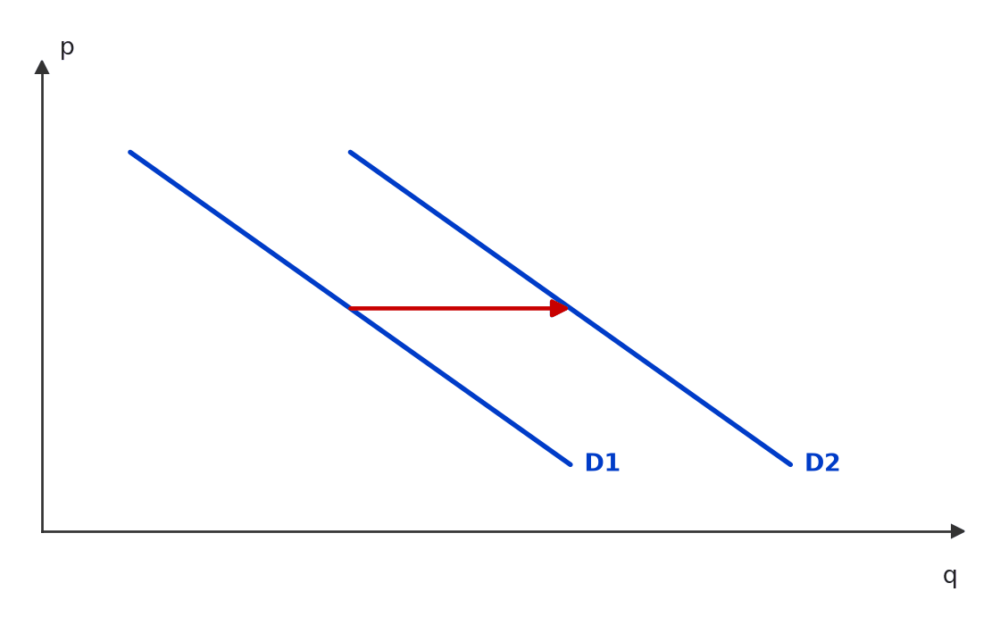
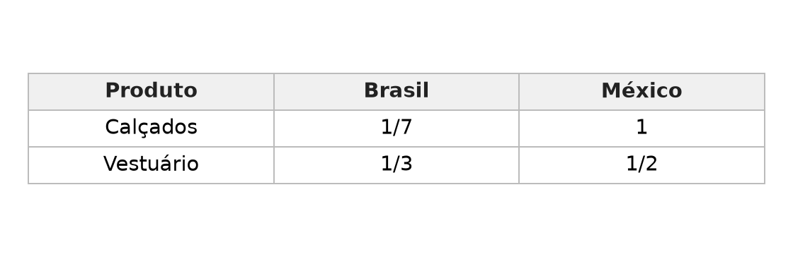
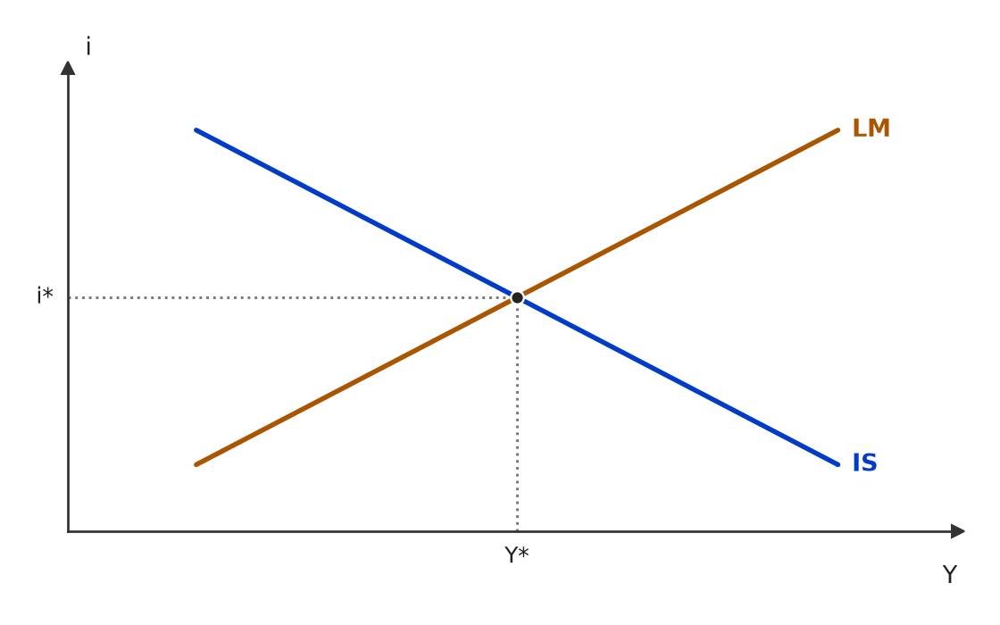
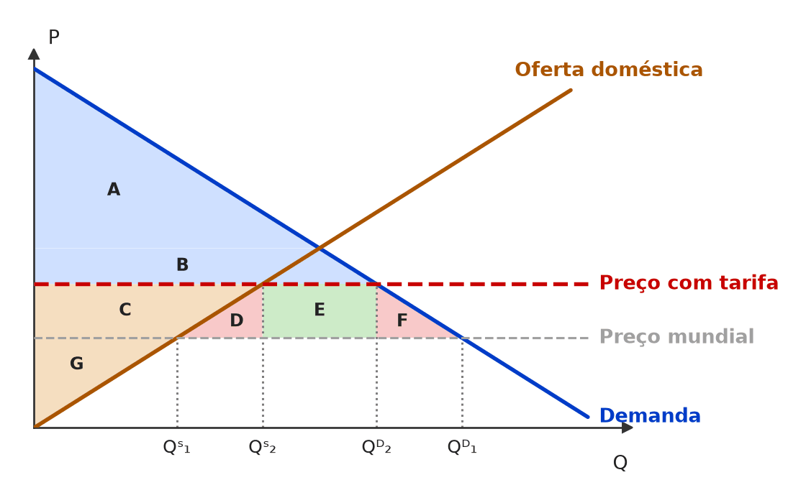
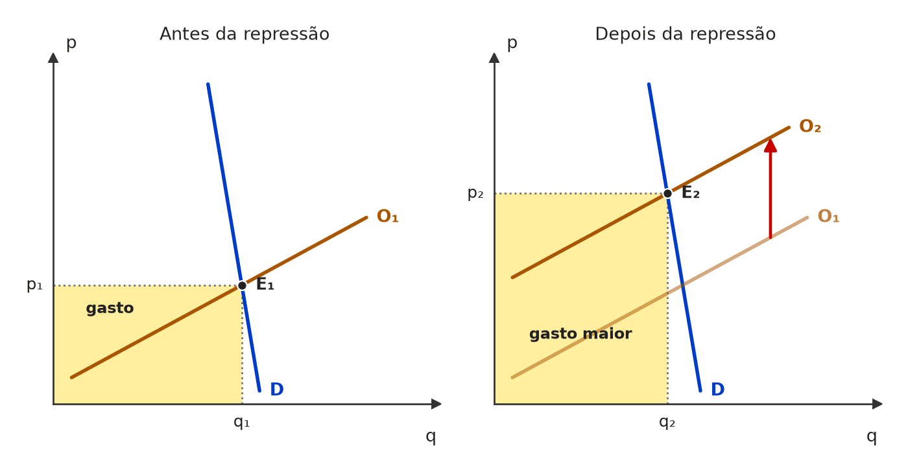
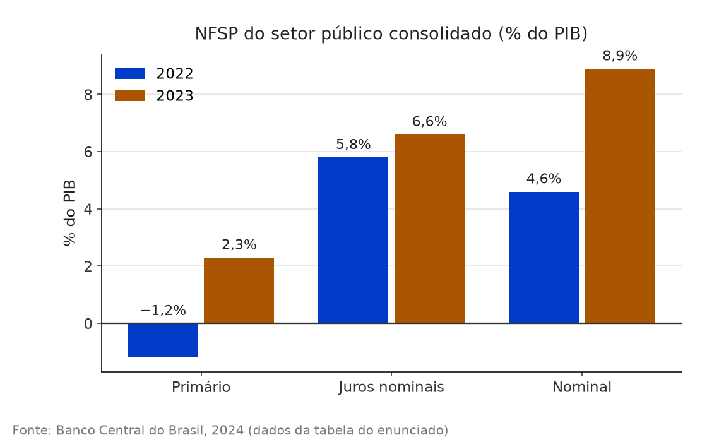

Gráfico 1 — curva de demanda do bem x, que se desloca no tempo de D1 para D2.

À esquerda, o preço do próprio bem cai e o consumidor anda AO LONGO da mesma curva (A → B). À direita, muda outro determinante da demanda e a CURVA INTEIRA se desloca (D1 → D2).

Se y é complementar de x, o aumento do preço de y desloca a demanda de x para a ESQUERDA (D1 → D0) — o contrário do Gráfico 1. Para ir de D1 a D2, y teria de ser substituto.

Coeficientes técnicos de produção (horas de trabalho por unidade).

Qᴰ = 300 − 30p e Qˢ = 10p + 20 se cruzam em (90; 7). O excedente do consumidor é o triângulo entre a demanda e o preço: (10 − 7) × 90 ÷ 2 = 135.

Com o preço tabelado em 6 (abaixo do equilíbrio de 7), demanda-se 120 e oferta-se 80: falta produto — excesso de DEMANDA de 40 unidades.

Equilíbrio simultâneo nos mercados de bens (IS) e monetário (LM), com produto Y* e taxa de juros i*.

Compra de títulos pelo Banco Central = expansão monetária: a LM desce para a direita (LM1 → LM2), os juros caem (i1 → i2) e a renda sobe (Y1 → Y2).

Na armadilha da liquidez, a LM é horizontal: a política fiscal expansionista (IS1 → IS2) eleva a renda sem elevar os juros — não há crowding out, e o multiplicador opera por inteiro.

Isoquantas Q1 < Q2 < Q3 da função de produção com capital (K) e trabalho (L).

O imposto t abre uma cunha entre o preço pago pelo comprador (pc) e o recebido pelo vendedor (pv). O retângulo verde é a receita do governo (t × qt); o triângulo vermelho é o peso morto — trocas que deixam de acontecer entre qt e q0.

Mercado doméstico de aço com preço mundial e tarifa de importação (áreas A a G).

Em todo estado estacionário, s·f(k) = (n+δ)k — é o ponto k*. A regra de ouro escolhe o k em que a inclinação de f(k) iguala a de (n+δ)k: ali a distância vertical entre produção e investimento necessário (o consumo) é máxima.

Demanda inelástica (quase vertical): a repressão ao tráfico desloca a oferta para a esquerda (O1 → O2); o preço sobe muito, a quantidade cai pouco — e o gasto total (retângulo p × q) aumenta.
aviso: [painel 2] rótulo 'gasto maior' é cortado pela curva S1

Nas NFSP, valor positivo = déficit (necessidade de financiamento) e negativo = superávit. Em 2022 houve superávit primário (−1,2% do PIB); em 2023, déficit primário (2,3%). Nominal = primário + juros nominais.